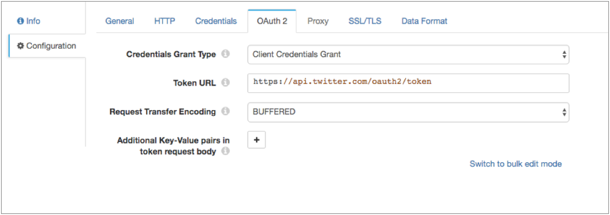
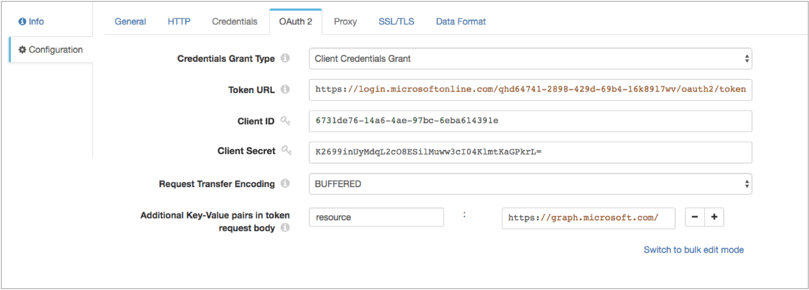

HTTP Client
The HTTP Client processor sends requests to an HTTP resource URL and writes the results to a field in the record. You can use the HTTP Client processor to perform a range of standard requests or you can use an expression to determine the request for each record.
When you configure the HTTP Client, you define the resource URL, header attributes, and method to use. For some methods, you can specify the request body and default content type.
You can configure the processor to include response header fields in the record as a set of record header attributes or as a map in a record field.
You can also configure the timeout, request transfer encoding, maximum number of parallel requests, and authentication type. You can optionally use an HTTP proxy and configure SSL/TLS properties.
You can also configure the processor to use the OAuth 2 protocol to connect to an HTTP service.
HTTP Method
- GET
- PUT
- POST
- DELETE
- HEAD
- Expression - An expression that evaluates to one of the other methods.
Expression Method
The Expression method allows you to write an expression that evaluates to a standard HTTP method. Use the Expression method to generate a workflow. For example, you can use an expression that performs a lookup (GET) or passes data to the server (PUT) based on the data in a field.
Parallel Requests
The HTTP Client processor sends multiple requests at a time. To preserve record order, the processor waits until all requests for the entire batch are completed before processing the next batch.
You can specify the maximum number of parallel requests. Default is 1. Increasing the number of parallel requests can improve performance but increases the load on the server. Network latency can also significantly impact the performance of this processor.
Response Header Fields
- Record header attributes
- The processor can write data in response header fields to corresponding record header attributes.
- When writing to record header attributes, you define a prefix for the attributes to avoid name conflicts. The processor then appends the response header field name to the prefix.
- For example, if you define "info-" as the prefix, then data in the content-encoding response header field is written to the "info-content-encoding" record header attribute.
- For general information about record header attributes, see Record Header Attributes.
- Record field
- The processor can also write the response header fields to a field in the record. The processor writes the response header fields to the record field as a map of key-value pairs where the key is the response header field name.
- When writing to a field, you specify the field to use. If the field includes data, the processor overwrites the data. If the field does not exist, the processor creates the field.
OAuth 2 Authorization
You can configure the HTTP Client processor to use the OAuth 2 protocol to connect to an HTTP service that uses basic, digest, or universal authentication, OAuth 2 client credentials, OAuth 2 username and password, or OAuth 2 JSON Web Tokens (JWT).
The OAuth 2 protocol authorizes third-party access to HTTP service resources without sharing credentials. The HTTP Client processor uses credentials to request an access token from the service. The service returns the token to the processor, and then the processor includes the token in a header in each request to the resource URL.
- Client credentials grant
-
HTTP Client sends its own credentials - the client ID and client secret or the basic, digest, or universal authentication credentials - to the HTTP service. For example, use the client credentials grant to process data from the Twitter API or from the Microsoft Azure Active Directory (Azure AD) API.
For more information about the client credentials grant, see https://tools.ietf.org/html/rfc6749#section-4.4.
- Resource owner password credentials grant
-
HTTP Client sends the credentials for the resource owner - the resource owner username and password - to the HTTP service. Or, you can use this grant type to migrate existing clients using basic, digest, or universal authentication to OAuth 2 by converting the stored credentials to an access token.
For example, use this grant to process data from the Getty Images API. For more information about using OAuth 2 to connect to the Getty Images API, see http://developers.gettyimages.com/api/docs/v3/oauth2.html.
For more information about the resource owner password credentials grant, see https://tools.ietf.org/html/rfc6749#section-4.3.
- JSON Web Tokens (JWT)
-
HTTP Client sends a JSON-based security token encoding to the HTTP service. For example, use JSON Web Tokens to process data from the Google API.
Let’s look at some examples of how to configure authentication and OAuth 2 authorization to process data from Twitter, Microsoft Azure AD, and Google APIs.
Example for Twitter
To use OAuth 2 authorization to read from Twitter, configure HTTP Client to use basic authentication and the client credentials grant.
For more information about configuring OAuth 2 authorization for Twitter, see https://dev.twitter.com/oauth/application-only.

Example for Microsoft Azure AD
To use OAuth 2 authorization to read from Microsoft Azure AD, configure HTTP Client to use no authentication and the client credentials grant.
For more information about configuring OAuth 2 authorization for Microsoft Azure AD, see https://docs.microsoft.com/en-us/azure/active-directory/develop/active-directory-protocols-oauth-code.

Example for Google
To use OAuth 2 authorization to read from Google service accounts, configure HTTP Client to use no authentication and the JSON Web Tokens grant.
For more information about configuring OAuth 2 authorization for Google, see https://developers.google.com/identity/protocols/OAuth2.

Data Formats
The HTTP Client processor writes the server response to the specified field in the record.
The processor treats the response as the specified data format and processes data differently based on the data format:
- JSON
- Writes a parsed JSON response to the specified field.
- When an object exceeds the specified maximum object length, the processor processes the object based on the error handling configured for the stage.
- Text
- Writes the response as a string to the specified field.
- When a line exceeds the specified maximum line length, the processor truncates the line. The processor adds a boolean field named Truncated to indicate if the line was truncated.
- XML
- Writes the XML response to the specified field.
- When specified, the processor uses the delimiter element to nest additional elements in the field.
- When a record exceeds the specified maximum record length, the processor skips the record and continues processing with the next record. It sends the skipped record to the pipeline for error handling.
Configuring HTTP Client Processor
Configure an HTTP Client processor to perform requests against a resource URL.
-
In the Properties panel, on the General tab, configure the
following properties:
General Property Description Name Stage name. Description Optional description. Required Fields 
Fields that must include data for the record to be passed into the stage. Tip: You might include fields that the stage uses.Records that do not include all required fields are processed based on the error handling configured for the pipeline.
Preconditions Conditions that must evaluate to TRUE to allow a record to enter the stage for processing. Click Add to create additional preconditions. Records that do not meet all preconditions are processed based on the error handling configured for the stage.
On Record Error Error record handling for the stage: - Discard - Discards the record.
- Send to Error - Sends the record to the pipeline for error handling.
- Stop Pipeline - Stops the pipeline. Not valid for cluster pipelines.
-
On the HTTP tab, configure the following properties:
HTTP Property Description Output Field Field to use for the response. You can use a new or existing field. Header Output Location 
Location to write response header field information. Header Attribute Prefix Prefix to use when writing response header field information to record header attributes. Header Output Field Field to use when writing response header field information to a field in the record. Resource URL HTTP resource URL. Headers The headers to include in the request. Using simple or bulk edit mode, click the Add icon to add additional headers. HTTP Method HTTP request method. Use one of the standard methods or use Expression to enter an expression. HTTP Method Expression Expression that evaluates to a standard HTTP method. Used for the Expression method only.
Request Data Request data to use with the specified method. Available for the PUT, POST, DELETE, and Expression methods. Default Request Content Type Content-Type header to include in the request. Used only when the Content-Type header is not present. Available for the PUT, POST, DELETE, and Expression methods.
Default is application/json.
Request Transfer Encoding Use one of the following encoding types: - Buffered - The standard transfer encoding type.
- Chunked - Transfers data in chunks. Not supported by all servers.
The default is Chunked.
Connect Timeout Maximum number of milliseconds to wait for a connection. Use 0 to wait indefinitely.
Read Timeout Maximum number of milliseconds to wait for data. Use 0 to wait indefinitely.
Maximum Parallel Requests Maximum number of requests to send to the server at one time. Authentication Type Determines the authentication type used to connect to the server: - None - Performs no authentication.
- Basic - Uses basic authentication. Requires a username and password.
Use with HTTPS to avoid passing unencrypted credentials.
- Digest - Uses digest authentication. Requires a username and password.
- Universal - Makes an anonymous connection, then provides authentication credentials
upon receiving a 401 status and a WWW-Authenticate header request.
Requires a username and password associated with basic or digest authentication.
Use only with servers that respond to this workflow.
- OAuth - Uses OAuth 1.0 authentication. Requires OAuth credentials.
Use OAuth 2 Enables using OAuth 2 authorization to request access tokens. You can use OAuth 2 authorization with none, basic, digest, or universal authentication.
Use Proxy Enables using an HTTP proxy to connect to the system.
Maximum Request Time Maximum number of seconds to wait for a request to complete. Rate Limit Maximum number of requests to make per second. Set a rate limit when sending requests to a rate-limited API. Default is 0, which means there is no delay between requests.
-
To use SSL/TLS, on the TLS tab, configure the following
properties:
TLS Property Description Use TLS Enables the use of TLS.
Keystore File The path to the keystore file. Enter an absolute path to the file or a path relative to the Data Collector resources directory: $SDC_RESOURCES. For more information about environment variables, see Data Collector Environment Configuration.
By default, no keystore is used.
Keystore Type Type of keystore to use. Use one of the following types: - Java Keystore File (JKS)
- PKCS-12 (p12 file)
Default is Java Keystore File (JKS).
Keystore Password Password to the keystore file. A password is optional, but recommended. Tip: To secure sensitive information such as passwords, you can use runtime resources or credential stores.Keystore Key Algorithm The algorithm used to manage the keystore. Default is SunX509.
Truststore File The path to the truststore file. Enter an absolute path to the file or a path relative to the Data Collector resources directory: $SDC_RESOURCES. For more information about environment variables, see Data Collector Environment Configuration.
By default, no truststore is used.
Truststore Type Type of truststore to use. Use one of the following types: - Java Keystore File (JKS)
- PKCS-12 (p12 file)
Default is Java Keystore File (JKS).
Truststore Password Password to the truststore file. A password is optional, but recommended. Tip: To secure sensitive information such as passwords, you can use runtime resources or credential stores.Truststore Trust Algorithm The algorithm used to manage the truststore. Default is SunX509.
Use Default Protocols Determines the transport layer security (TLS) protocol to use. The default protocol is TLSv1.2. To use a different protocol, clear this option. Transport Protocols The TLS protocols to use. To use a protocol other than the default TLSv1.2, click the Add icon and enter the protocol name. You can use simple or bulk edit mode to add protocols. Note: Older protocols are not as secure as TLSv1.2.Use Default Cipher Suites Determines the cipher suite to use when performing the SSL/TLS handshake. Data Collector provides a set of cipher suites that it can use by default. For a full list, see Cipher Suites.
Cipher Suites Cipher suites to use. To use a cipher suite that is not a part of the default set, click the Add icon and enter the name of the cipher suite. You can use simple or bulk edit mode to add cipher suites. Enter the Java Secure Socket Extension (JSSE) name for the additional cipher suites that you want to use.
-
On the Data Format tab, configure the following
property:
Data Format Property Description Data Format Data format of the response:- JSON
- Text
- XML
-
For JSON data, on the Data Format tab, configure the
following properties:
JSON Property Description Maximum Object Length (chars) Maximum number of characters in a JSON object. Longer objects are diverted to the pipeline for error handling.
This property can be limited by the Data Collector parser buffer size. For more information, see Maximum Record Size.
Charset Character encoding of the data to be processed. Ignore Ctrl Characters Removes all ASCII control characters except for the tab, line feed, and carriage return characters. -
For text data, on the Data Format tab, configure the
following properties:
Text Property Description Max Line Length Maximum number of characters allowed for a line. Longer lines are truncated. Adds a boolean field to the record to indicate if it was truncated. The field name is Truncated.
This property can be limited by the Data Collector parser buffer size. For more information, see Maximum Record Size.
Use Custom Delimiter Uses custom delimiters to define records instead of line breaks. Custom Delimiter One or more characters to use to define records. Include Custom Delimiter Includes delimiter characters in the record. Charset Character encoding of the files to be processed. Ignore Ctrl Characters Removes all ASCII control characters except for the tab, line feed, and carriage return characters. -
For XML data, on the Data Format tab, configure the
following properties:
XML Property Description Delimiter Element XML element that acts as a delimiter. Omit a delimiter to treat the entire XML document as one field.
Max Record Length (chars) The maximum number of characters in a field. Longer fields are diverted to the pipeline for error handling.
This property can be limited by the Data Collector parser buffer size. For more information, see Maximum Record Size.
Charset Character encoding of the files to be processed. Ignore Ctrl Characters Removes all ASCII control characters except for the tab, line feed, and carriage return characters.